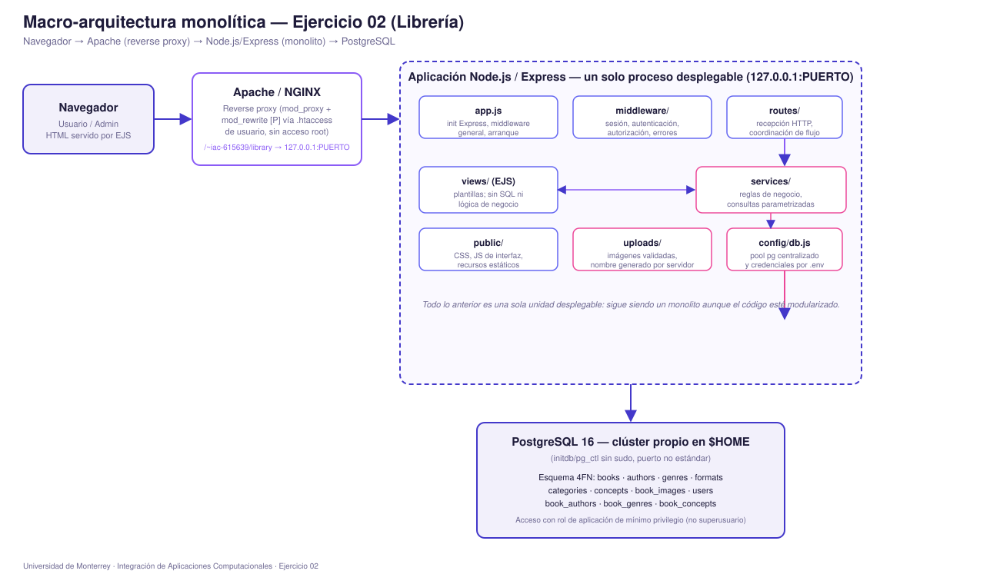
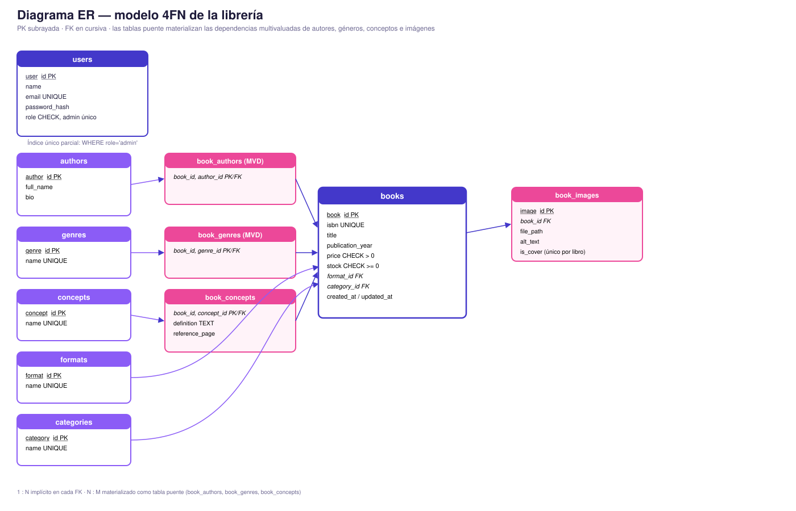

Ejercicio guiado + trabajo en casa · 02
Aplicación web
monolítica para una librería
GCP SDK CLI · Compute Engine · CentOS Stream 10 · Node.js · Express · EJS ·
PostgreSQL · 4FN · CRUD · Uploads · Autenticación · Apache/NGINX — reinterpretado para el despliegue
real en ubiquitous.udem.edu sin sudo (ver sección 4).
| Nombre | Maximiliano Rubio Alanis |
| Matrícula | 615639 |
| Grupo y hora | Por completar |
| Fecha | 4 de septiembre de 2026 |
Objetivo y alcance
Diseñar, construir, probar, desplegar y documentar una aplicación web monolítica en Node.js para la gestión de una librería en línea, con acceso directo a PostgreSQL, modelo de datos normalizado hasta 4FN, CRUD completo sobre todas las tablas del modelo, manejo de imágenes de libros y registro de conceptos/definiciones asociados al contenido de cada libro.
El enunciado original (Ejercicio-02.pdf) asume una VM
propia en GCP con acceso root. El alcance real de esta entrega se adapta al entorno disponible:
despliegue directo sobre el servidor compartido ubiquitous.udem.edu, con acceso SSH pero
sin privilegios de sudo — ver sección 4 para el detalle completo de esa adaptación.
Análisis de requisitos
Documento completo de requisitos funcionales (RF-01…RF-14) y no funcionales (RNF-01…RNF-08), actores (Visitante, Usuario registrado, Administrador) y riesgos iniciales identificados (acceso no autorizado, SQL Injection, subida de archivos peligrosos, exposición de credenciales, eliminación accidental, publicación de datos sensibles).
Decisiones de arquitectura y diagrama del monolito
Arquitectura monolítica server-side: Navegador → Apache/NGINX (reverse proxy vía .htaccess
de usuario, sin tocar la configuración global) → Node.js/Express (rutas, middleware, servicios,
vistas EJS, estáticos, uploads) → PostgreSQL. Todo el backend es una sola unidad desplegable, aunque
el código está modularizado por responsabilidad.

Ver registro completo de decisiones (ENGINEERING_DECISIONS.md) ↗
Diseño de la base de datos: diagrama ER y 4FN
Evolución documentada 1FN → 2FN → 3FN/BCNF → 4FN, resolviendo explícitamente las dependencias
multivaluadas de autores, géneros, conceptos e imágenes con tablas puente independientes entre sí
(book_authors, book_genres, book_concepts, book_images).

Ver el proceso completo de normalización ↗ · Ver todos los scripts SQL (schema, seed, SP, triggers, vistas) ↗
Infraestructura: de GCP a ubiquitous.udem.edu sin sudo
No se aprovisionó ninguna VM en GCP. Se verificó por SSH, sin asumir nada, qué ofrece realmente
el servidor de la materia: Node 22 y PostgreSQL 16 ya instalados, un servicio PostgreSQL de sistema
sin credenciales propias accesibles, y Apache con mod_proxy/mod_rewrite
cargados y AllowOverride FileInfo habilitado para el directorio del usuario.
Se probó y confirmó que un clúster PostgreSQL propio dentro de $HOME
(initdb/pg_ctl, sin sudo) es viable, y que el reverse proxy se puede resolver
con una regla RewriteRule … [P] en un .htaccess de usuario. El detalle
completo, con la salida real de cada comando de diagnóstico, está en
DEPLOYMENT_UBIQUITOUS.md.
Estructura de módulos de Node.js
middleware/ resuelve autenticación, autorización por rol y manejo centralizado de errores; config/db.js es el único punto de conexión a PostgreSQL.
Funcionalidades implementadas
- 1
Cuentas y sesión. Registro, login, logout, contraseñas con bcrypt, sesión persistida en PostgreSQL.
- 2
Catálogo. Listado paginado, búsqueda por ISBN exacto y por título, detalle con autores/géneros/conceptos/imágenes.
- 3
CRUD administrativo. Libros, autores, géneros, formatos, categorías y conceptos, todo desde la interfaz web.
- 4
Relaciones N:M. Autores↔libro y géneros↔libro independientes entre sí; conceptos con definición propia por libro.
- 5
Imágenes. Carga validada (extensión, MIME real, tamaño), portada marcable, nombre generado por el servidor.
- 6
Stock y precio. Ajuste de stock vía stored procedure, con mensajes de negocio ante intentos inválidos.
Seguridad y roles
Un único Administrador reforzado por índice único parcial + trigger; autorización por rol en
cada ruta /admin/*; consultas 100% parametrizadas; validación server-side de campos y
de archivos (firma binaria real, no solo el MIME declarado); errores controlados sin stack traces
ni SQL visible; rol de PostgreSQL de mínimo privilegio para la aplicación.
Ver revisión de seguridad completa (9 controles + adicionales) ↗
Plan y resultados de pruebas
Matriz de 30 casos (funcionales, autorización, integridad negativa, validación de campos/archivos,
relaciones N:M, parametrización SQL, despliegue y usabilidad). Los resultados reales
(Observado/Estado/Evidencia) fueron tomados en vivo el 4 de septiembre de 2026 contra el servidor ya
desplegado: primero sobre 127.0.0.1:3110 y después a través del reverse proxy
(http://127.0.0.1/~iac-615639/library/...), el mismo camino que usa Apache público.
| Categoría | Casos | Estado |
|---|---|---|
| Funcionales (login, búsqueda, CRUD) | TC-01 a TC-13 | PASS (evidencia por curl/psql) |
| Autorización por rol | TC-14 a TC-16 | PASS (302→login y 403 con vista propia) |
| Integridad negativa (BD) | TC-17 a TC-22 | PASS (6 errores reales de PostgreSQL) |
| Validación de campos/archivos | TC-23, TC-24 | PASS (400 y rechazo por firma binaria) |
| Relaciones N:M y conceptos | TC-25 a TC-27 | PASS (book id 33: 2 autores, 2 géneros, 2 conceptos) |
| SQLi / despliegue / usabilidad | TC-28 a TC-30 | PASS (0 filas anti-SQLi; proxy 200; links con prefijo) |
Ver la matriz completa de 30 casos, ya con Observado/Estado/Evidencia ↗
Despliegue con Apache (reverse proxy) — ya en vivo
Node.js escucha únicamente en 127.0.0.1:3110 (puerto real elegido tras el escaneo de
sockets de la sección 05) y PostgreSQL propio en 127.0.0.1:5433 (datadir
~/pgdata). Apache expone
https://ubiquitous.udem.edu/~iac-615639/library mediante reglas
RewriteRule … [P] en un .htaccess de usuario (sin acceso a la
configuración global de Apache): /library y /uploads → Node. El heartbeat
del clúster y del proceso Node corre por cron cada 5 min.
Durante la verificación en vivo se encontró y corrigió un problema real que no aparecía en el
diseño: navegando vía el proxy UserDir, la cookie de sesión se emitía con Path=/library
pero el navegador pide /~iac-615639/library/... → RFC 6265 no hacía path-match y
express-session 1.19 exigía que el pathname llegado a Node empezara por el cookie path. Solución
aplicada y verificada: cookie con Path=/ (HttpOnly, SameSite=Lax) más prefijo
APP_BASE_PATH=/~iac-615639 en redirects y todas las vistas, y una nueva regla de proxy
para /uploads (las imágenes viven en app/uploads, no en el UserDir).
Detalle completo en AI_CHANGELOG (G2).
Validado en vivo: login → 302 Location: /~iac-615639/library/catalog, catálogo/detalle/
admin 200, css 200, portada seed 200 (image/jpeg), logout → 302 a login.
Ver procedimiento completo de despliegue y evidencia ↗
Galería de evidencias
Las pruebas se tomaron sobre el camino del proxy (http://127.0.0.1/~iac-615639/library/...,
idéntico al que usa el Apache público) y se documentaron con salida real de terminal/HTTP. Resumen
verificado el 4 de septiembre de 2026:
- 1
Login correcto vía proxy —
302 → /~iac-615639/library/catalog;Set-Cookie library.sid; Path=/; HttpOnly; SameSite=Lax. - 2
Catálogo y detalle — 200 con links prefijados
href="/~iac-615639/library/catalog/1"y portada realsrc="/~iac-615639/uploads/seed/978-0-EJ02-0001-cover.jpg"(200image/jpeg). - 3
Autorización — visitante 302→login; usuario
registered→ 403 con la vista propia «Acceso denegado»; admin recorre todo/admin/*. - 4
Integridad de datos — 6 errores reales de PostgreSQL (UNIQUE isbn, CHECK stock/precio, FK autores, ON DELETE RESTRICT, trigger de un solo Administrador) reproducidos en
db/03_...sqlsección 4. - 5
Negativos — registro sin password → 400 «Todos los campos son obligatorios.»; buscador con
x' OR '1'='1→ 0 resultados;.phprenombrado a.jpg→ rechazado por firma binaria real. - 6
Acceso público —
http://ubiquitous.udem.edu/~iac-615639/library/auth/login→ 200. Nota: el HTTPS público no es alcanzable desde dentro del propio servidor; la captura final de navegador en ventana privada se toma fuera del túnel.
Evidencia por caso (TC-01…TC-30) en docs/TEST_PLAN.md; errores reales de PostgreSQL en docs/DEPLOYMENT_UBIQUITOUS.md sección 5; arreglo del proxy en AI_CHANGELOG.md.
Decisiones de ingeniería, problemas y soluciones
La decisión con más impacto en todo el proyecto fue D-04: reemplazar la VM propia en GCP por un
clúster PostgreSQL autocontenido en $HOME, tras confirmar por SSH que no había sudo ni
credenciales para el servicio de sistema. Esa decisión —y las otras tres registradas antes de
escribir código (monolito, acceso directo con pg, EJS server-side)— están documentadas
con el esquema completo (necesidad → alternativas → decisión → justificación → riesgo → validación).
Problema real encontrado y resuelto durante el despliegue (Checkpoint G): la app no era navegable
detrás del proxy UserDir porque la cookie de sesión usaba Path=/library y los links/
redirects eran absolutos /library/.... La solución pasó por cookie Path=/
+ prefijo APP_BASE_PATH=/~iac-615639 en todas las vistas, además de una regla de proxy
para /uploads y de portadas seed reales (60 JPEG). Impacto de este servidor: el
sync.sh existente revierte a origin/main cada 5 min y no hay credenciales
de push, por lo que la copia que sirve la web en vivo vive en ~/libapp/ y el arreglo se
publica como patch (~/library-work/fix-proxy-userdir.patch).
Ver las 4 decisiones completas ↗ · Ver evaluación arquitectónica monolito vs. desacoplado vs. microservicios (Tarea 2c) ↗
Uso documentado de Inteligencia Artificial
La IA ayudó a explorar el entorno real del servidor (por SSH, con comandos de solo lectura), a diseñar la adaptación de GCP a un despliegue sin sudo, y a construir el código, el esquema SQL y la documentación. Cada decisión de arquitectura y de base de datos fue revisada, cuestionada y verificada por el estudiante antes de aceptarla.
Ver historial completo de prompts (AI_PROMPT_HISTORY.md) ↗ · Ver changelog por archivo (AI_CHANGELOG.md) ↗ · Ver plantilla de mejoras puntuales (PROMPT_MAESTRO_IA.md) ↗
Conclusiones y mejoras futuras
El sistema cumple el alcance monolítico pedido: modelo 4FN completo, CRUD real sobre todas las tablas administrables, autenticación con un solo Administrador, subida de imágenes validada, y un plan de despliegue viable en un servidor compartido sin privilegios de root — algo que el enunciado original no contemplaba y que se resolvió como un problema de ingeniería real, no como un obstáculo a ignorar.
Limitaciones conocidas: las imágenes se sirven sin control de sesión adicional (riesgo residual aceptado, ver SECURITY_REVIEW.md); el almacenamiento de imágenes es un directorio local que no escala horizontalmente. Como mejora futura razonable: mover uploads/ a almacenamiento de objetos externo antes de pensar en separar frontend/backend o en microservicios (ver ARCHITECTURE_TRADEOFFS.md) — ninguna de esas dos últimas se justifica todavía para el tamaño real de este proyecto.